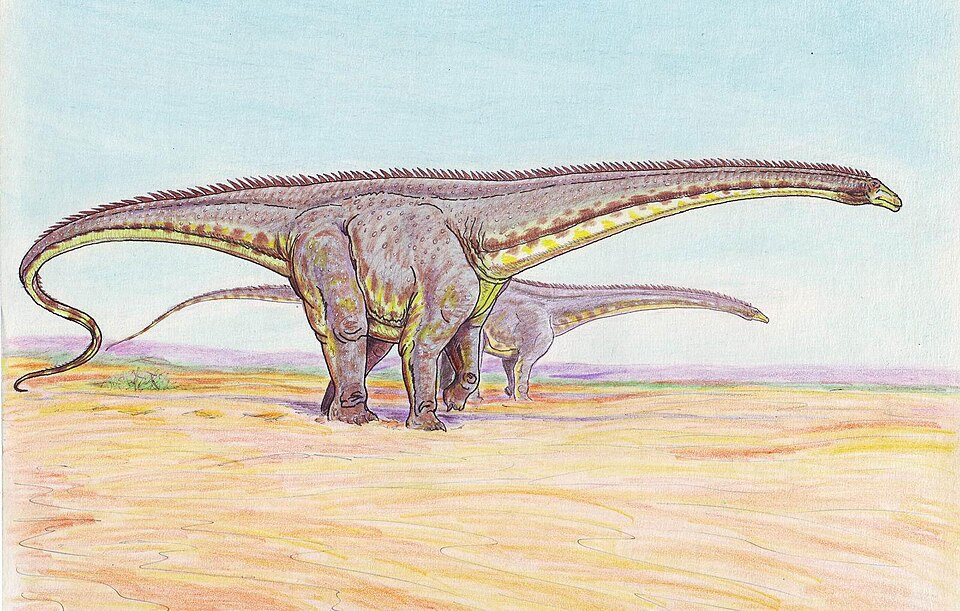

Diplodoco
Diplodocus carnegii
Período
Viveu durante o período Jurássico Superior, há aproximadamente 154 a 150 milhões de anos.
Alimentação
Era herbívoro e se alimentava de folhas, plantas e vegetação rasteira.
Características
Possuía um pescoço longo, corpo robusto e uma cauda extremamente comprida, que podia representar boa parte de seu comprimento total.
Curiosidades
- Seu nome faz referência aos ossos duplos encontrados na parte inferior de sua cauda.
- Sua cauda podia funcionar como uma espécie de chicote para defesa ou comunicação.
- Seus fósseis foram encontrados principalmente na América do Norte.